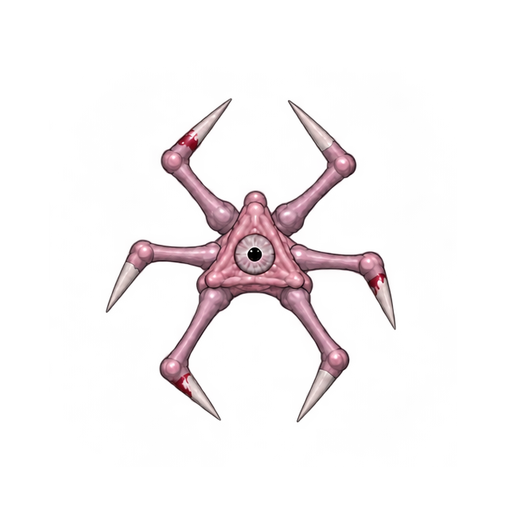
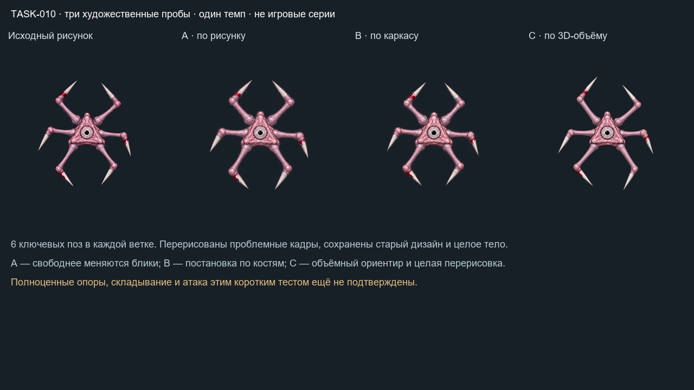
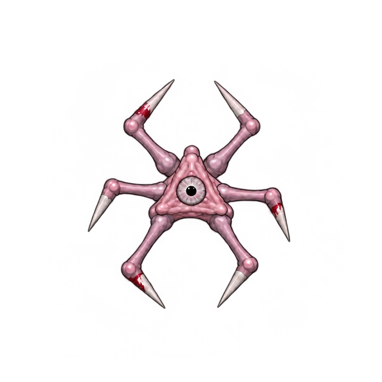
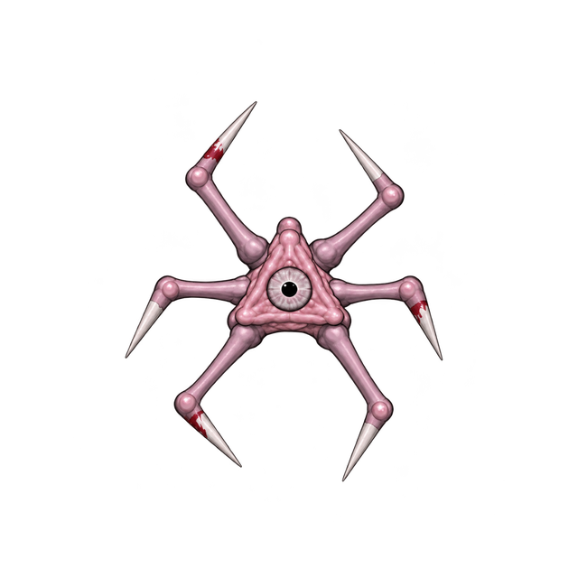

A · по исходнику

Цельная рисовка по оригиналу. Проблемная поза перерисована отдельно.
Слева в общей анимации — неизменённый старый рисунок. Дальше A, B, C: по шесть цельных ключей с одинаковым темпом.


Цельная рисовка по оригиналу. Проблемная поза перерисована отдельно.

Цельная рисовка по независимым костным ориентирам. Исправлены три кадра.

Ортографические объёмные ориентиры Blender и цельная перерисовка. Все шесть кадров получены заново по одному.
Это короткие художественные пробы для выбора направления. Полный набор состояний, физичная походка и игровая интеграция ещё не подтверждены. Итог у всех — генерация целых рисунков; C не означает готовую чистовую 3D-модель.